Build Your Own Cube View
In this chapter, we will go through the creation of several related Cube Views using a step-by-step approach. Creating Cube Views can be complex and may seem daunting, so we will look at tips and tricks along the way to help make the process as straightforward and User-friendly as possible.
The goal is not only to help you create these Cube Views, but also to make them flexible and adaptable for your Users. We understand that everyone has different needs and preferences when it comes to data visualization, so our Cube Views will be designed to be modifiable and able to suit different Users’ needs.
By the end of this chapter, you will have a comprehensive understanding of how to create effective and flexible Cube Views, with the knowledge and skills to apply these techniques to your own work. Whether you are new to Cube Views or are looking to improve your existing skills, this chapter should give you the resources you need to succeed!
Build Your Own Cube View
Cube View Recap
Cube Views are a display mechanism that allow you to present data from a ‘Cube’ in a ‘View’ that is easily understood by consumers of the data. In other words, a Cube View is a multi-dimensional representation of data that enables Users to analyze and interact with large volumes of data from multiple perspectives.
There are hundreds of tools that can help you collect data, but if you can’t tell a story with the data, then what’s the point? Imagine you have a spreadsheet with critical information about your organization’s financial data – but no way to sort, filter, organize, or pivot your data. Cube Views are OneStream’s foundational reporting tool and allow you to define information in a digestible way simply by querying the Cube and displaying the information that is relevant to you.
Cube Views display data as a set of Cubes or Dimensions that can be rotated and manipulated to view the data from different angles. Each Dimension represents a different aspect of the data, such as Time, Product, Geography (or any Attribute that your organization defines as a reporting requirement or need). Thoughtful selection and combinations of different data Dimensions can help answer specific business questions and solve financial challenges.
Cube Views can be used to perform a wide range of analyses, such as trend analysis, variance analysis, and forecasting. They can also be used to create templates for data entry Forms to collect valuable financial and non-financial data that your organization needs in Financial Planning. They are particularly useful for analyzing large datasets, as they enable Users to drill down into the data to uncover insights and identify trends.
Okay, let’s get into the nitty-gritty.
Build Your Own Cube View
A Step-by-Step Example
In this example, we’ll build an Income Statement Variance Cube View with dynamic filters and navigation links – to linked Cube Views and linked Dashboards – to enable your Users to access more granular data via an intuitive click method. We’ll leverage parameters to accelerate formatting with consistency that can be used across the application, and a Cube View Extender Rule to apply Report formatting for objects that are not editable from the UI. The end result will be a fully formatted Cube View for viewing in Data Explorer, Excel, and Reports.
The key components of our Cube View include:
Point of View
Rows and Columns
Formatting
Navigation Links
Build Your Own Cube View › A Step-by-Step Example
Step 1: Creating a Cube View
Navigate to the Presentation menu from the Application tab, and click Cube Views to access your Cube View library. The Cube View library is an Inventory of your Cube Views. Cube View Groups allow you to organize Reports and data entry Forms in a way that makes sense to your organization.
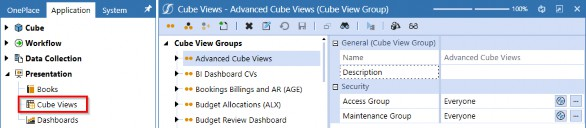
Figure 9.1
To create a new Cube View, select the Cube View Group where you want to store the Cube View and then click the Create Cube View button from the header toolbar.
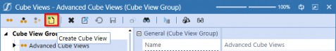
Figure 9.2
Enter Income Statement Variance in the name field, leave the description blank, then save. If your application uses specific naming conventions to sort Cube Views, consider entering User-friendly descriptions. For example, you can name the Cube View IncomeStatementVariance, but if you want users to see Income Statement Variance, then you would enter Income Statement Variance as the description. It’s important to remember that substitution variables are available to display these properties using |CVName| or |CVDesc|.
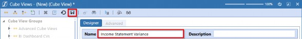
Figure 9.3
Build Your Own Cube View › A Step-by-Step Example
Step 2: Point of View
The POV is ultimately what you define as your default filters for a given Report. There are many different approaches to designing Cube Views depending on different variables – including the nature of the Report, your organization’s preferences, and the purpose of the Report, to name but a few. There are certainly use cases for not setting POV filters in a Cube View. For instance, if you want a Cube View to be driven off your Users’ Cube POV selections rather than controlling the filters, then leaving Member Filters blank in the Cube View POV would default to a given User’s Cube POV.
In my experience, relying on User Cube POVs can be tricky since they are User-sensitive, which means different Users may not see the same data, and that can cause confusion. A personal best practice of mine is to define each Member Filter to adhere to consistency in the data that Users see.
The figure below is how we’ve set the Cube View POV. Notice that we’ve parameterized the EntityMember, TimeMember, and ViewMember to allow the User to select these filters upon displaying the Cube View. The ScenarioMember and AccountMember are not defined intentionally; the ScenarioMember will be set in our columns and the AccountMember will be set in our rows. The remaining filters are explicitly defined to restrict the data from differing between Users.
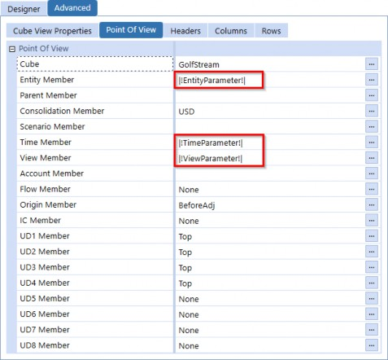
Figure 9.4
The parameters used in the Cube View’s POV are shown here. Notice the Default Value and Display Member settings for each parameter; the Default Value(s) are what we want to see initially selected when the prompt dialog appears, and the Display Member will show the Member descriptions for the selections.
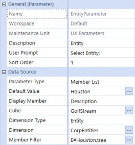
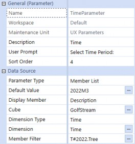
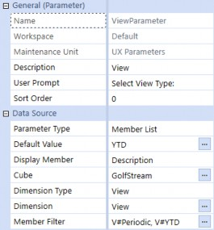
Figure 9.5
| Note: The Member List Parameter Type will show a flat list within a combo box. |
While we’re defining the Report’s content, we should also consider the Report’s header and footer fields to provide clarity into the data we’re presenting. From the Report settings, we have the opportunity to surface pertinent information about the Report so our Users know what relevant data points are being presented; this is the perfect time to leverage substitution variables.
Since we’re parameterizing the Report’s Time, Entity, and View Members, we’ll want to present the selected filters on the Report so our Users can easily identify the data set they are viewing. Setting the subtitle fields to display our chosen substitution variables will greatly help Users validate what they’ve selected from the filters.
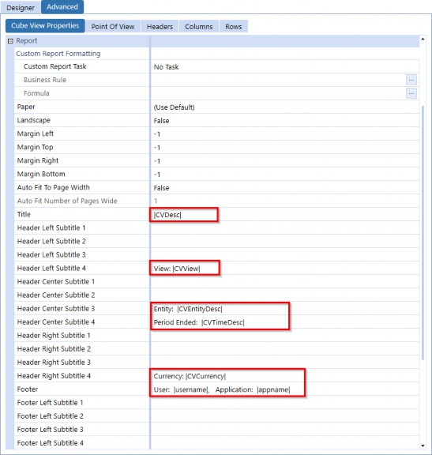
Figure 9.6
Here’s what the Report header looks like when we add context to the Report settings. It makes the Report content a little more clear, right? When building Cube Views, I highly suggest incorporating these settings to give your Reports transparency into what is being presented.
Figure 9.7
Another important factor to consider when building Cube Views is how you want to display the Member Names. Do you want to include the Account name, description, or both? This is where you can use the selectors to dictate how the Member Filters are displayed in your Cube View.
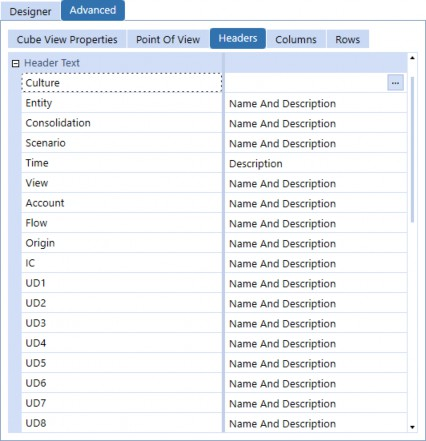
Figure 9.8
Build Your Own Cube View › A Step-by-Step Example
Step 3: Rows and Columns
The arrangement of information in a Report is determined by its rows and columns. Rows represent the horizontal organization of data, while columns represent the vertical arrangement of data.
Together, rows and columns form a grid that provides a clear and structured layout for the Report’s content. This layout helps readers to quickly locate and understand the information they need.
Build Your Own Cube View › A Step-by-Step Example › Step 3: Rows and Columns
Rows
The Income Statement requires the inclusion of several key financial metrics to accurately represent the financial performance of a business. These metrics typically include Net Sales, Cost of Goods Sold, Gross Income, Operating Expenses, and Operating Income; these are the Accounts we’ll include in our Cube View.
The table below is how we’ll set up our rows. The Row Names include suffixes to indicate Detail, Subtotals, and the Grand Total, which will be used in formatting the rows using conditional formatting later in this chapter.
It’s important to note that building Cube Views requires some knowledge of your metadata structure to ensure accurate reporting; we’ve selected the Accounts below based on our Account hierarchy shown in Figure 9.10. Notice that the indent levels relate to the leveling in our Account hierarchy.
| Row Name | Primary Dimension Type | Member Filter | Indent Level |
|---|---|---|---|
| NetSales_D | Account | A#60999.Children | 0 |
| NetSales_T | Account | A#60999 | 1 |
| COGS_D | Account | A#43000.Children | 0 |
| COGS_T | Account | A#43000 | 1 |
| GrossIncome_T | Account | A#61000 | 2 |
| OperatingExpenses_D | Account | A#54500.Children | 0 |
| OperatingExpenses_T | Account | A#54500 | 2 |
| OperatingIncome_GT | Account | A#62000 | 3 |
Figure 9.9
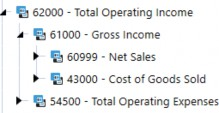
Figure 9.10
We’ll add these rows to our Cube View by navigating to the Rows tab from the Advanced view, and then clicking the Add Row or Column button in the header toolbar.
If you prefer to use the Designer view, navigate to the Rows and Columns slider and complete the following: rename Row1 as NetSales_D, select the Account as the Member selection, and enter A#60999.Children in the Member Filter. Click the Add Row button and repeat this process for the remaining rows. See Figure 9.11 for how this completed row should appear.
Note: To access the Row Indent Level from the Design view, select the Rows and Columns slider, select the row name, and click on the Formatting tab. |
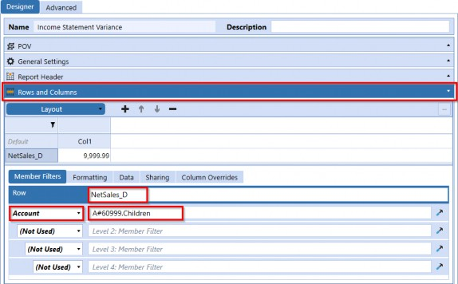
Figure 9.11
The figure below displays the rows we’ve added to our Cube View from the Advanced view.
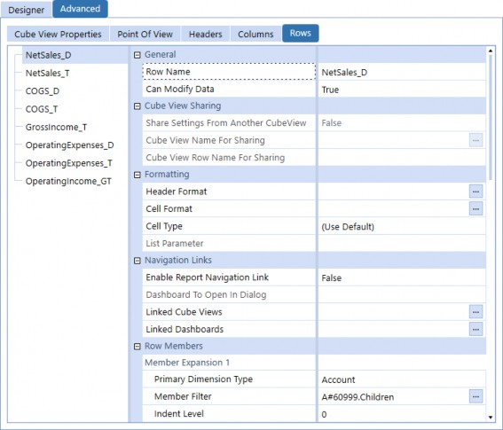
Figure 9.12
Build Your Own Cube View › A Step-by-Step Example › Step 3: Rows and Columns
Columns
For our columns, we’ll display Actual and Budget Scenarios, as well as variance in dollars, variance %, and an explanation field to collect information about the organization’s performance. Variance reporting typically refers to Planned versus Actual data comparison, with Scenario being the most common Dimension to use in columns. Trend or year-over-year reporting, on the other hand, usually uses the Time Dimension in the columns.
The Actual column displays the actual performance of the metric for the given period, while the Budget column displays the expected performance based on the budgeted figures. The Variance in dollars column represents the absolute difference between the Actual and budgeted performance in monetary terms, while the Variance % column represents the percentage difference between the two. Finally, the Explanation field provides a space for you to collect commentary from your Users to explain volatility, unique occurrences that caused the variance, and overall explanations to help the organization make future business decisions.
| Column Name | Primary Dimension Type | Member Filter |
|---|---|---|
| Actual | Scenario | S#Actual |
| Budget | Scenario | S#BudgetV2 |
| Variance | Scenario | GetDataCell(BWDiff(S#Actual,S#BudgetV2)):Name("Variance") |
| VariancePercent | Scenario | GetDataCell(BWPercent(S#Actual, S#BudgetV2)):Name("Var %") |
| Explanation | Scenario | S#Actual:V#Annotation:Name("Explanation") |
Figure 9.13
The figure below displays the columns we’ve added to our Cube View from the Advanced view.
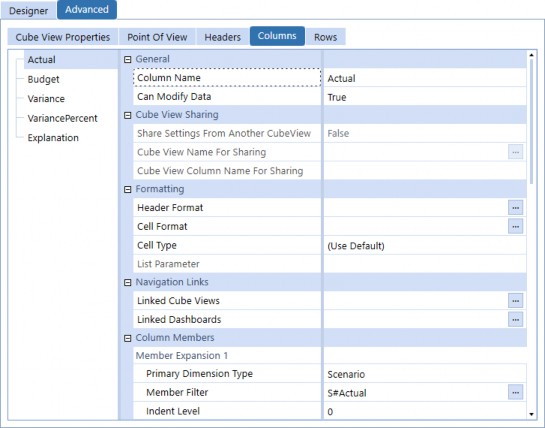
Figure 9.14
Build Your Own Cube View › A Step-by-Step Example
Step 4: Formatting
At this point, we have the layout configured for our Cube View, so you may think we’re done – but are we? Let’s look at the current state of the Report.
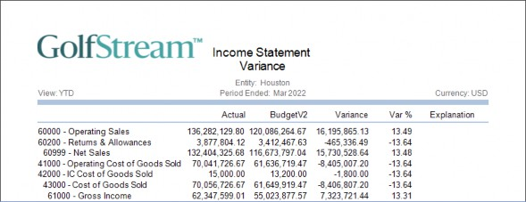
Figure 9.15
At a glance, the Report serves its purpose and displays the data we’re expecting, but you probably wouldn’t present this to your Users; aside from the indentation, the data isn’t super clear in differentiating detail from totals. Let’s dive into formatting as our next step.
Build Your Own Cube View › A Step-by-Step Example › Step 4: Formatting
UI Formatting Options
Formatting options are tools that allow you to customize the way that data is presented. In the context of General Cube Views, Excel, and Reports output, there may be variations in the available formatting options. For example, General Cube Views offer a specific set of formatting options that allow you to adjust the appearance of data in a tabular format within OneStream’s interface. Excel formatting options include controls that are valid specifically in a spreadsheet tool. Reporting offers yet another set of formatting options that allow you to produce polished, professional Reports.
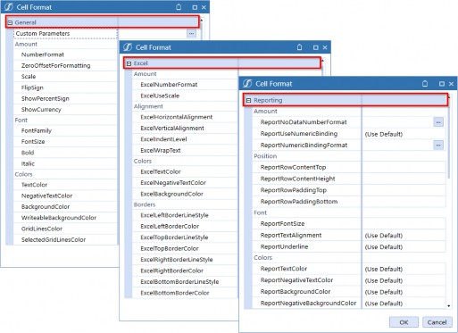
Figure 9.16
Remember, in the rows section, how we used suffixes on the row names to indicate the level of data being presented? That naming convention allows us to use conditional formatting on the Overall Cube View’s header and cell format, rather than manually having to format each row and column set. This is incredibly powerful when you have many rows or columns and need to update specific formatting (whether it be font size, number format, etc.); you only need to update the parameter and the formatting will be applied globally.
Figure 9.17 shows how to access the Cube View’s global formatting settings from the Design view; while figure 9.18 shows the same fields from the Advanced view.
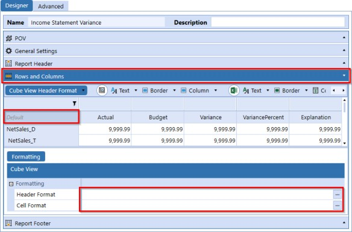
Figure 9.17
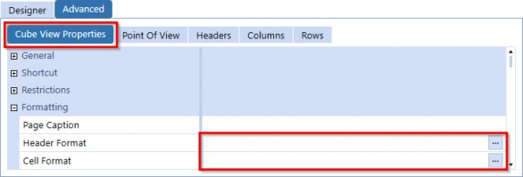
Figure 9.18
| Note: Global Cube View header formatting will apply to both row and column headers. You can set default formatting in this section, and any formatting set on explicit row or column headers will override the global header formatting. |
For this example, we’ve created the following formatting parameters for different cell types to accelerate this step, as defined below.
| Parameter Name | Literal Value |
|---|---|
| DetailCell | IF (IsRowNumberEven = True) THEN BackgroundColor = White, ELSE BackgroundColor = #FFF5F7FB, END IF, ReportFontSize = 8, SelectedGridLinesColor = XFDarkBlueBackground, NegativeTextColor = Firebrick, ReportNoDataNumberFormat = ["-"], ExcelNumberFormat = [#,##0_);[Red](#,##0)], ReportBackgroundColor = White, ReportTextColor = black, ExcelTextColor = Black, ExcelBackgroundColor = White, NumberFormat = [#,###,0;(#,###,0);0], ReportRowContentHeight = 17,SelectedGridLinesColor = Transparent |
| SubTotalCell | ReportBackgroundColor = White, BackgroundColor = XFLightBlue2, ExcelNumberFormat = [#,##0_);[Red](#,##0)], ReportTopLine1Color = XFMediumBlueBorder, ReportFontSize = 8, ReportRowContentBottom = 10,ReportUseTopLine1 = True, ReportTextColor = SteelBlue,ReportNegativeTextColor = Firebrick,Bold = True, TextColor = SteelBlue, NumberFormat = [#,###,0;(#,###,0);0], GridLinesColor = Transparent |
| GrandTotalCell | ReportBackgroundColor = White, BackgroundColor = XFLightBlue, GridLinesColor = Transparent, Bold = True, ReportTextAlignment = MiddleRight, ReportFontSize = 8, ExcelNumberFormat = [#,##0_);[Red](#,##0)], NegativeTextColor = Firebrick, ReportTopLine1Color = XFMediumBlueBorder, ReportTopLine2Color = XFMediumBlueBorder, ReportUseTopLine1 = True, ReportUseTopLine2 = True, ReportTextColor = SteelBlue, TextColor = SteelBlue, ExcelBackgroundColor = XFMediumBlueBackground, NumberFormat = [#,###,0;(#,###,0);0] |
| ColumnHeader | Bold = True, ReportFontSize = 8, ReportTextAlignment = MiddleRight, ReportTextColor = SteelBlue, TextColor = SteelBlue, ShowDimensionImages = False,ReportColumnWidth = 85, ColumnWidth = 110 |
| VariancePctCell | BackgroundColor = AliceBlue, NegativeTextColor = Firebrick, NumberFormat = = [#,###,0.0\%], ExcelNumberFormat = 0.00\%, ExcelNegativeTextColor = Red, ReportFontSize = 8, ReportBackgroundColor = White, If (RowName Contains '_D') AND (CellAmount < -15) Then BackgroundColor = Yellow, ExcelBackgroundColor = Yellow End If |
| VariancePctCellSubTotal | ReportBackgroundColor = White, BackgroundColor = XFLightBlue2, GridLinesColor = Transparent, Bold = True, ReportTextAlignment = MiddleRight, ReportFontSize = 8, ExcelNumberFormat = 0.00\%, ExcelNegativeTextColor = Red, NegativeTextColor = Firebrick, ReportTopLine1Color = XFMediumBlueBorder, ReportUseTopLine1 = True, ReportTextColor = SteelBlue, TextColor = SteelBlue, ExcelBackgroundColor = XFLightBlue2, NumberFormat = = [#,###,0.0\%] |
| VariancePctCellGrandTotal | ReportBackgroundColor = White, BackgroundColor = XFLightBlue, GridLinesColor = Transparent, Bold = True, ReportTextAlignment = MiddleRight, ReportFontSize = 8, ExcelNumberFormat = 0.00\%, ExcelNegativeTextColor = Red, NegativeTextColor = Firebrick, ReportTopLine1Color = XFMediumBlueBorder, ReportTopLine2Color = XFMediumBlueBorder, ReportUseTopLine1 = True, ReportUseTopLine2 = True, ReportTextColor = SteelBlue, TextColor = SteelBlue, ExcelBackgroundColor = XFMediumBlueBackground, NumberFormat = = [#,###,0.0\%] |
| DetailHeader | IF (IsRowNumberEven = True) THEN BackgroundColor = White, ExcelBackgroundColor = White ELSE BackgroundColor = #FFF5F7FB, ExcelBackgroundColor = White END IF, ReportFontSize = 8, ReportBackgroundColor = White, ReportTextColor = black, ExcelTextColor = Black, ShowDimensionImages = False, ExcelVerticalAlignment = Top, ReportRowContentHeight = 17 |
| SubTotalHeader | Bold = True, ReportRowContentBottom = 10, GridLinesColor = Transparent, TextColor = SteelBlue, BackgroundColor = XFLightBlue2, ReportBackgroundColor = White, ShowDimensionImages = False, ReportFontSize = 8, ReportTopLine1Color = Transparent, ReportUseTopLine1 = True |
| GrandTotalHeader | ReportBackgroundColor = White, BackgroundColor = XFLightBlue, GridLinesColor = Transparent, Bold = True, ReportFontSize = 8, ReportTopLine1Color = Transparent, ReportTopLine2Color = Transparent, ReportUseTopLine1 = True, ReportUseTopLine2 = True, ReportTextColor = SteelBlue, TextColor = SteelBlue, ExcelBackgroundColor = XFMediumBlueBackground, ShowDimensionImages = False |
Figure 9.19
From either the Design or Advanced view, click on the Header Format ellipse to edit the headers and enter the syntax below to apply the format parameters to the headers. Conditions available for header formatting and cell formatting differ in that cell conditions include options for cell status, Storage Type, amount, etc.
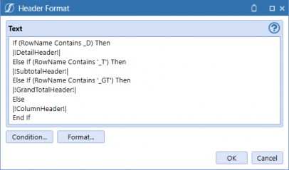
Figure 9.20
Now, let’s apply cell formatting using the same logic. Notice that we use different parameters for data cells where additional formatting is necessary, since we’re working with numeric fields.
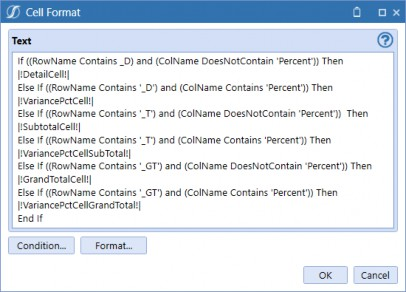
Figure 9.21
Build Your Own Cube View › A Step-by-Step Example › Step 4: Formatting
Cube View Extender
Cube View Extenders offer additional flexibility to modify Report objects that may not be directly accessible from the UI. These Report objects include elements such as labels, Calculations, or formatting options which are not easily adjustable through the standard Cube View options.
While the use of Cube View Extenders may require some additional knowledge or training, they can be a powerful tool for creating more effective and engaging Reports. By allowing you to fine-tune Report objects that may not be accessible through the standard Cube View UI, Cube View Extenders give you the ability to create Reports that are truly tailored to your specific needs and objectives.
Let’s view the Cube View Report and see if we need to make any adjustments to the format.
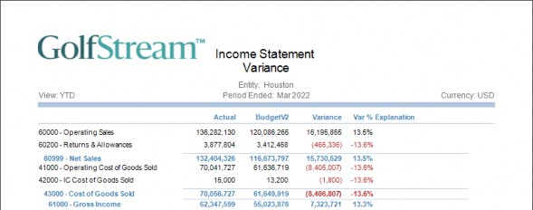
Figure 9.22
The Report looks great, but the logo draws too much attention away from the actual content of the Report, and the Report title would look better on one line instead of being wrapped. To address this, the use of a Cube View Extender can be implemented.
To apply a Cube View Extender, navigate to the Report and select Cube View Properties. Then, set the Custom Report Task property to Execute Cube View Extender Inline Formula, and click the ellipse button to access the Formula Editor.
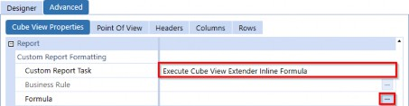
Figure 9.23
When you first enable the Inline Formula feature, the Formula Editor window provides you with sample syntax. This is helpful because it can be overwhelming to try to figure out how to write the correct code from scratch.
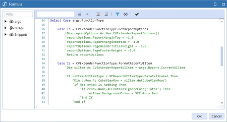
Figure 9.24
Build Your Own Cube View We will be using the following syntax to resize the logo, as noted above.
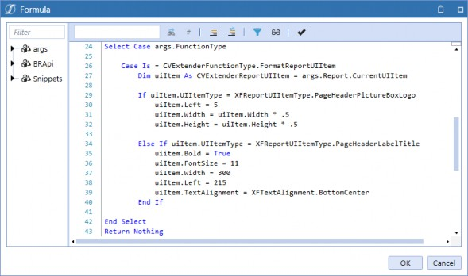
Figure 9.25
After implementing the Cube View Extender, we can see a significant improvement in the appearance of our Report. The changes we made to the Report – including resizing the logo and adjusting the title to fit on one row – have helped to create a more polished and professional look.
One major improvement we can see is that the Report now looks much cleaner and easier to read. The large logo that was once a distraction has been resized, allowing readers to focus on the important data presented in the Report. The adjustments made to the Report title also contribute to this improvement, as the title is now clear and easy to read on a single line.
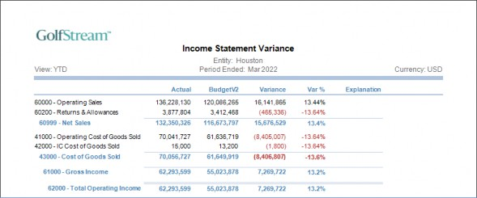
Figure 9.26
Build Your Own Cube View › A Step-by-Step Example › Step 5: Navigation Links
Linked Cube Views
Following the previous example, here is how our Product Detail Cube View POV will be configured. The rows displayed in the Product Detail Cube View are restricted to our product Dimension’s hierarchy.
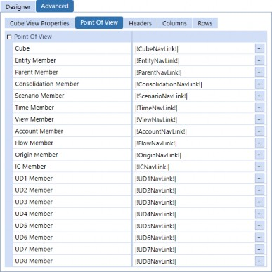
Figure 9.31
Build Your Own Cube View › A Step-by-Step Example › Step 5: Navigation Links
Linked Dashboards
Similarly, linked Dashboards will be configured with the Bound Parameters and displayed with a visual object to give the User even more context to trend data.
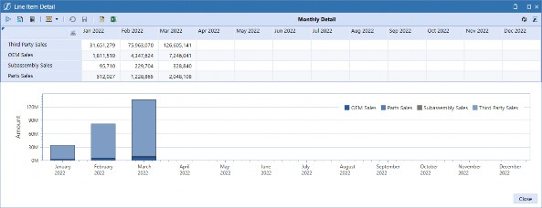
Figure 9.32
Build Your Own Cube View › A Step-by-Step Example
Completed Cube View
Build Your Own Cube View › A Step-by-Step Example › Completed Cube View
Data Explorer Result
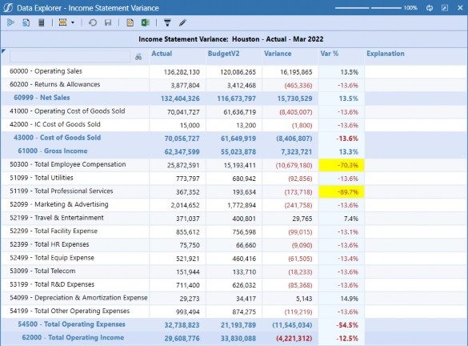
Figure 9.33
Build Your Own Cube View › A Step-by-Step Example › Completed Cube View
Excel Result
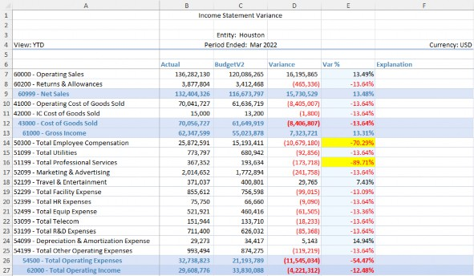
Figure 9.34
Build Your Own Cube View › A Step-by-Step Example › Completed Cube View
Report Result
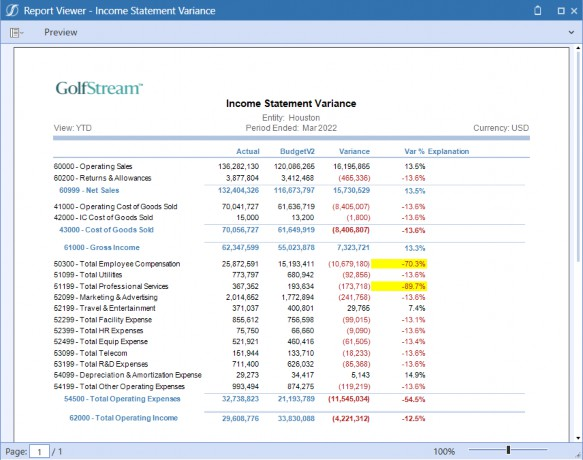
Figure 9.35
Build Your Own Cube View
Conclusion
Building Cube Views may seem like a formidable task, but this chapter has explained use cases for incorporating filters, format parameters, Cube View Extenders, and navigation links to give you the tools to create robust and intuitive interactions for your Users.
Determining what you want to display in your rows and columns defines the actual Report, while the POV dictates the Report’s restrictions in order to display relevant data. Using templates for your Reports provides standardization and consistency; you can create as many as needed, and the best part is you can quickly swap them out if/when needed to instantly update your Report Inventory. Also, Administrators and Power Users can build their own templates for other more specific User requirements, which opens up even more possibilities. We can’t forget about Guided Reporting, a OneStream MarketPlace solution that’s available to you; the solution is based on templates, which gives your Users the self-serve experience they want and need.
The takeaway is that once you build these complex components into your Cube Views, the options for drilling and formatting are endless!